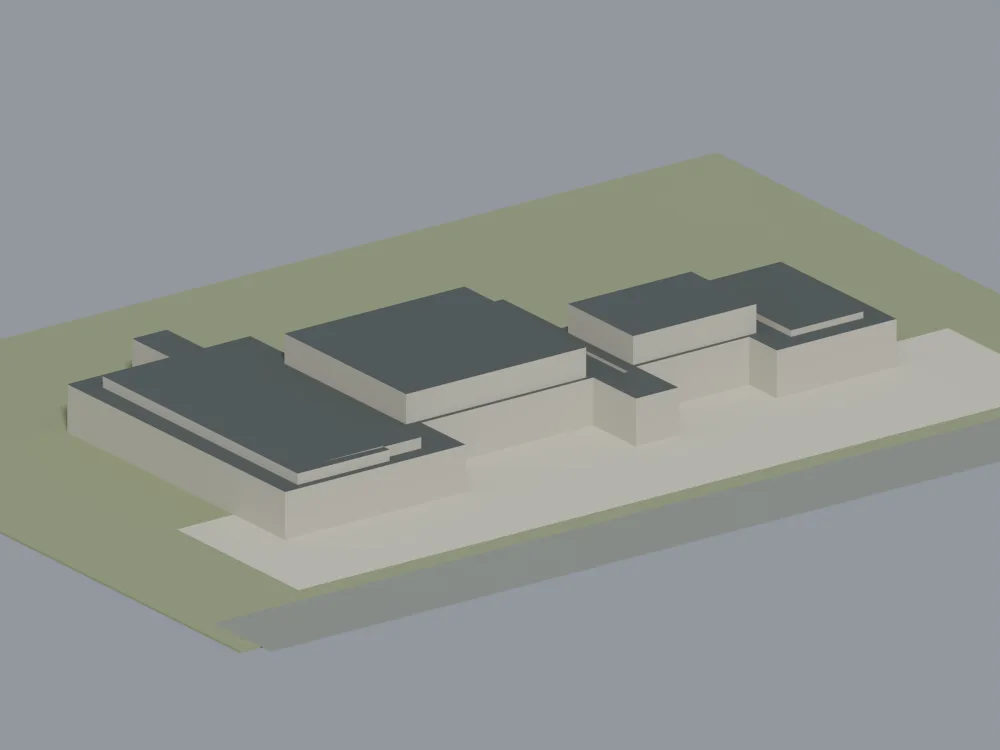
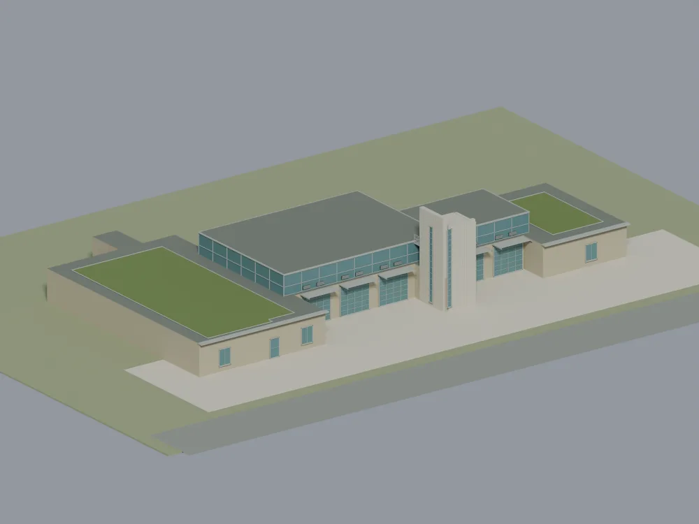

Future Mississauga · Ongoing · Updated October 2026
Building Future Mississauga
I wanted to see how Mississauga's new buildings and transit would fit together, beyond one development's render. Future Mississauga has grown into an interactive 3D atlas with 19 explorable areas, existing-city comparisons and the sources behind individual projects.

More than a finished picture.
You can move around the city, compare existing context with proposed development, and see the Hurontario LRT, GO corridors and Transitway in their surroundings. The gallery, building studies and downloadable atlas offer different ways into the same project.
The October 17 release added a detailed Churchill Meadows view and placed the Winding Trail and 228 Queen Street South exterior studies in the city model. Other studies cover homes, community buildings, heritage sites and local landmarks.
On October 21, I added Lisgar & Argentia and improved the viewer’s light balance and shading so building faces and corners are easier to distinguish. These changes are live in the interactive model; the gallery images retain their original dates.
Meadowvale Village is now available too, bringing the explorer to 18 detailed local views plus the citywide overview.
Better references, better models.
At 1355 Winding Trail, the original mapped building was missing much of the visible exterior. References shared by Kleinfeldt Mychajlowycz Architects helped me add the tower, glazed front bays and lower green roofs. These published views use the same viewpoint so the changes are easy to compare.




The City footprint provides the starting scale and shape. Tower height, roof levels and unseen surfaces remain estimates. The ground shown here is a display base, not a survey.
The sources stay with the work.
I check the address, footprint, orientation and design against available drawings and photographs, then review how the building sits beside roads, ground and its neighbours. Local feedback helps me find missing buildings and outdated designs worth revisiting.
The public review records each project's sources, status and modelling limits. A proposed building is not necessarily approved, and approval does not mean construction has started. I keep those distinctions visible instead of treating the image as proof.
There is still more to check. Some forms are schematic, hidden details are estimated and parts of the city need better coverage. Model releases and gallery images are dated separately, so an older render is not presented as the latest model.